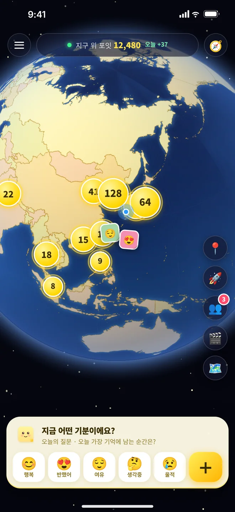
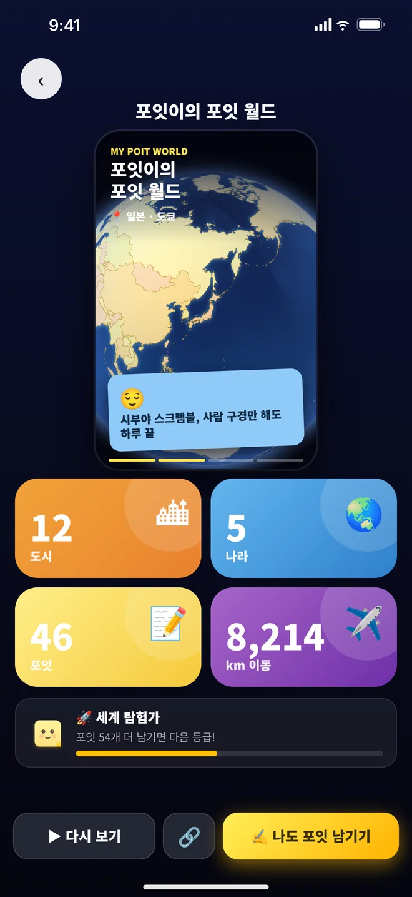

한눈에 보기 · At a glance
앱 / App
POIT 포잇 — 감정 지구본 (emotion globe)
제작 / Studio
Joyce Studios (소규모 독립 스튜디오 · small independent studio)
플랫폼 / Platforms
iPhone · iPad (App Store), 토스 미니앱
광고 / Ads
앱 내 광고 포함 · Contains ads
언어 / Language
한국어 (출시 시점) · Korean at launch
App Store
문의 / Contact
이야기 · The story
하루에도 수십 번 바뀌는 기분을 어디에 남길 수 있을까요? 포잇은 “마음을 남기는 곳”을 지구 위 실제 장소로 바꿨습니다. 앱을 열면 가입 없이 3D 지구본이 나타나고, 사람들이 곳곳에 붙여 둔 한 줄 포스트잇이 감정 색으로 반짝입니다. 나도 원하는 곳을 콕 찍어 5초 만에 마음을 붙일 수 있어요.
Where do you leave a feeling that changes a dozen times a day? POIT turns "somewhere to leave a feeling" into real places on Earth. Open the app and a 3D globe appears with no sign-up; one-line sticky notes shimmer in the color of the mood behind them. Tap any spot and pin your own in about five seconds.
특징 · What makes it different
🎨 감정이 곧 지도
포스트잇 색이 감정을 말해요. 지구의 분위기가 한눈에 보입니다.
Emotion is the map: notes are colored by mood.
포스트잇 색이 감정을 말해요. 지구의 분위기가 한눈에 보입니다.
Emotion is the map: notes are colored by mood.
🚀 월드 투어 · 포잇 월드
내가 남긴 포잇을 같은 간격으로 날아가며 보여 주고, 공유 가능한 영상으로 만들어요.
The globe flies through your notes at an even pace and builds a recap video.
내가 남긴 포잇을 같은 간격으로 날아가며 보여 주고, 공유 가능한 영상으로 만들어요.
The globe flies through your notes at an even pace and builds a recap video.
🖼 한 장으로 공유
포잇과 지구본 속 위치가 한 장의 이미지가 되고, 링크는 앱의 그 포잇으로(앱이 없으면 로그인 없이 웹에서) 열립니다.
One image of the note and its place; the link opens that note in the app, or on the web without login.
포잇과 지구본 속 위치가 한 장의 이미지가 되고, 링크는 앱의 그 포잇으로(앱이 없으면 로그인 없이 웹에서) 열립니다.
One image of the note and its place; the link opens that note in the app, or on the web without login.
📡 라이브 탐험(선택)
기본은 꺼짐. 내가 켜야만, 팔로워에게만, 대략적인 위치로 보이고 언제든 끌 수 있어요.
Opt-in, off by default, followers only, approximate location, stop anytime.
기본은 꺼짐. 내가 켜야만, 팔로워에게만, 대략적인 위치로 보이고 언제든 끌 수 있어요.
Opt-in, off by default, followers only, approximate location, stop anytime.
안전과 개인정보 · Safety & privacy
- 모든 포잇에 신고·차단 · Report and block on every note
- 익명·비공개 옵션 · Anonymous and private options
- 앱 안에서 바로 탈퇴(계정과 포잇 영구 삭제) · In-app account deletion
- 로그인 없이 둘러보기, 게스트 로그인 지원 · Browse without an account
- 접근성: 주요 컨트롤 접근성 라벨, 동작 줄이기(Reduce Motion) 지원
화면 · Screens




화면은 앱의 디자인으로 구성한 안내용 이미지입니다. · Illustrative screens built from the app's design.
공유 이미지 예시 · Share image sample